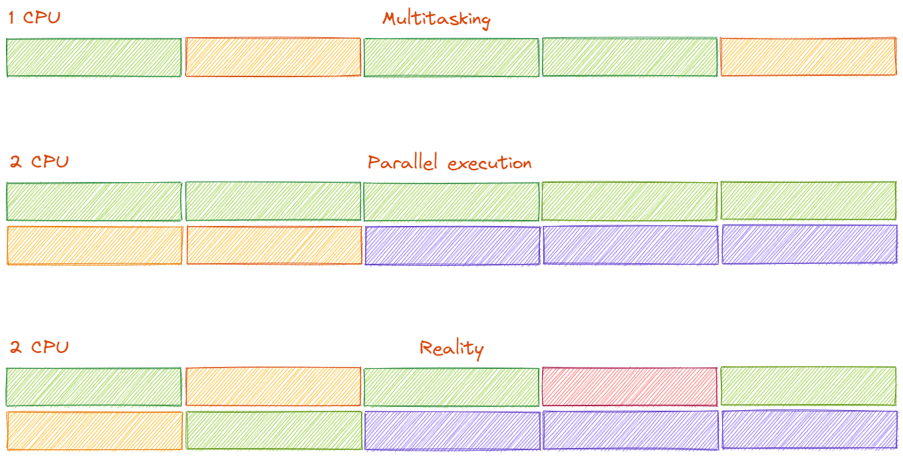

Wprowadzenie do programowania wielowątkowego#
Concurrency is about dealing with lots of things at once.
Parallelism is about doing lots of things at once.
Not the same, but related.
One is about structure, one is about execution.
Concurrency provides a way to structure a solution to solve a problem that may (but not necessarily) be parallelizable.
—Rob Pike, co-inventor of the Go language
Podstawowe pojęcia#
Współbieżność#
Możliwość obsługi wielu działających zadań, które są wykonywane jedno po drugim w przydzielonym czasie procesora (maszyna jednoprocesorowa + OS scheduler = multitasking) lub równolegle na wielu procesorach.

Równoległość#
Możliwość wykonywania wielu obliczeń w tym samym czasie. Wymaga CPU z wieloma rdzeniami, wielu CPU, GPU lub klastra komputerów.
Proces#
Egzemplarz wykonywanego programu. Współczesne systemy operacyjne zarządzają setkami procesów, które są jednocześnie uruchomione.
Za zarządzanie procesami odpowiada jądro systemu operacyjnego (process scheduler). Scheduler decyduje, który proces wykonuje swoje zadania w przydzielonym przedziale czasu. System operacyjny zarządza także priorytetami procesów.
Proces może tworzyć procesy potomne (child processes).
Sposoby komunikacji między procesami#
Procesy są izolowane. Dotyczy to także procesów potomnych. W rezultacie procesy mogą komunikować się między sobą przy pomocy:
pamięci współdzielonej
gniazd (socketów)
potoków
plików
sygnałów
Wątek#
Niezależny ciąg instrukcji wykonywany współbieżnie w ramach jednego procesu.
Wszystkie wątki działające w danym procesie współdzielą przestrzeń adresową oraz zasoby systemowe przydzielone procesowi. Dzięki temu wątki w obrębie procesu mają łatwy dostęp do:
pamięci (heap, static storage)
plików otwartych przez aplikację
gniazd (sockets)
itp.
Zasobem, który wątki nie współdzielą jest stos (stack). Każdy utworzony wątek posiada własny stos, na którym alokowane są lokalne zmienne funkcji wywołanej w tym wątku.
Wątki są udostępniane i kontrolowane przez system operacyjny. Natywne biblioteki umożliwiające zarządzanie wątkami to:
MS Windows – Win32 API
Linux, BSD - pthread
Proces czy wątek?#
Procesy:
są niezależne (izolowane)
mają oddzielne przestrzenie adresowe
komunikują się ze sobą za pośrednictwem IPC
proces może zostać uruchomiony na innym komputerze (lepsza skalowalność)
jeśli stabilność jest istotna, należy użyć procesów
jeśli wykorzystywane są zasoby, które są dostępne tylko na zasadzie „jeden dla procesu”, należy wybrać proces
Wątki:
należą do procesu
dzielą przestrzenie adresowe - z wyjątkiem stosu
koszt przełączania kontekstu jest mniejszy dla wątków
komunikacja wewnątrz wątków jest mniej kosztowna niż komunikacja międzyprocesowa
jeśli wątki wymagają zasobów, które nie mogą być użyte przez wiele procesów jednocześnie, należy korzystać z wątków
Po co używać współbieżności#
Rozdzielenie odpowiedzialności
Grupowanie (wydzielanie) logicznie spójnego kodu
Rozdzielanie odrębnych operacji, gdy mają się odbywać w tym samym czasie
Wydajność
“The free lunch is over” – Herb Sutter
Chcemy wykorzystać całą moc maszyny wieloprocesorowej (wielordzeniowej)
Chcemy podnieść skalowalność aplikacji
Podział zadań na części i wykonywanie równolegle (dekompozycja problemu może być trudna)
Lepsza responsywność aplikacji
Unikanie blokujących operacji I/O
Blokowanie interfejsu użytkownika
Kiedy nie używać współbieżności?#
Należy unikać wielowątkowości, gdy korzyści nie są warte kosztów:
Kod wielowątkowy jest dużo bardziej skomplikowany - trudniejszy do pisania, czytania i testowania niż kod jednowątkowy
Większa złożoność kodu, przekłada się na większą ilość błędów (bugów), które są trudne do wykrycia (często trudne do odtworzenia)
Narzuty związane z zarządzaniem wątkami mogą drastycznie obniżyć wydajność (context switching, cache ping-pong, false sharing)
Gdy zbyt wiele wątków jest uruchomionych jednocześnie
zużycie zasobów systemu operacyjnego
system jako całość będzie działał wolniej
Testowanie aplikacji wielowątkowych#
Kod jednowątkowy może być testowany jednostkowo (unit tests)
Powtarzalne wyniki dla testów wykonywanych w izolacji
Kod wielowątkowy jest trudno testowalny jednostkowo
Błędy (np. race conditions) nie są deterministyczne i są ciężko reprodukowalne
Problemy pojawiają często przy dużym obciążeniu lub zwielokrotnieniu wątków
Dobrze jest zapewnić możliwość skalowania ilości wątków do jednego (single threaded code) aby wykluczyć inne przyczyny błędów